최근 읽은 글 중에서, “왜 코딩 에이전트는 일반 챗봇보다 더 똑똑하게 느껴질까?”라는 질문에 가장 잘 답해주는 글 하나를 꼽자면 저는 Sebastian Raschka의 Components of A Coding Agent를 고르고 싶습니다.
원문 링크:
이 글은 단순히 “에이전트가 중요하다”는 이야기를 하지 않습니다. 대신 코딩 에이전트를 실제로 구성하는 부품이 무엇인지, 그리고 왜 그 구조가 Claude Code나 Codex 같은 도구를 더 강력하게 보이게 만드는지를 차근차근 설명합니다.
한 문장으로 정리하면 이렇습니다.
코딩 에이전트의 성능은 모델 자체보다, 그 모델을 감싸는 하네스(harness) 설계에서 더 크게 갈릴 수 있습니다.
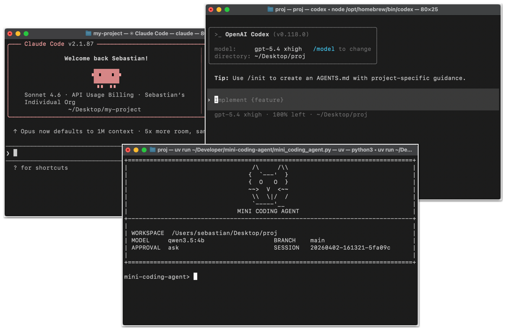
왜 이 글이 중요한가
요즘은 코딩 AI 도구를 이야기할 때 자연스럽게 모델 이름부터 꺼내게 됩니다.
- GPT가 더 좋은가
- Claude가 더 좋은가
- GLM이 얼마나 올라왔나
- 오픈웨이트 모델이 어느 정도 따라왔나
그런데 실제로 사용해보면, 체감 성능은 꼭 모델 이름만으로 설명되지 않습니다. 같은 계열 모델이어도 어떤 도구는 훨씬 더 유능하게 느껴지고, 어떤 도구는 비슷한 모델인데도 답답하게 느껴질 때가 있죠.
Raschka의 글은 바로 그 차이를 하네스라는 개념으로 설명합니다. 즉, 모델을 감싸는 소프트웨어 구조가 컨텍스트를 어떻게 모으고, 어떤 도구를 열어주고, 메모리를 어떻게 유지하고, 긴 세션을 어떻게 관리하느냐에 따라 실제 사용감이 크게 달라진다는 이야기입니다.
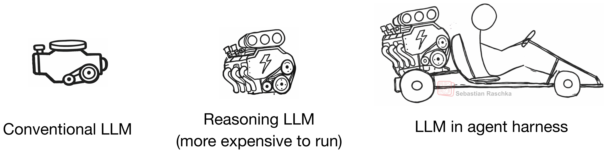
LLM, Reasoning Model, Agent, Harness는 다르다
이 글에서 가장 먼저 정리하는 것은 개념 구분입니다. 이 부분을 구분하지 않으면, 우리가 말하는 “에이전트 성능”이 자꾸 모델 이야기로만 흘러가게 됩니다.
LLM
기본이 되는 next-token 모델입니다. 쉽게 말하면 엔진입니다.
Reasoning Model
역시 LLM이지만, 중간 추론이나 검증을 더 잘하도록 학습되거나 유도된 모델입니다. 조금 더 강한 엔진이라고 볼 수 있습니다.
Agent
모델 위에 올라가는 제어 루프입니다. 목표가 주어졌을 때,
- 무엇을 먼저 볼지
- 어떤 도구를 쓸지
- 다음 행동을 어떻게 고를지
- 언제 멈출지
를 결정하는 층입니다.
Harness
여기서 핵심이 나옵니다. 하네스는 모델이 실제 작업을 잘하도록 만들어주는 소프트웨어 스캐폴드입니다.
즉, 프롬프트를 어떻게 조립할지, 도구를 어떤 형식으로 열어줄지, 파일 상태를 어떻게 관리할지, 긴 세션 메모리를 어떻게 다룰지 같은 것들이 다 이 층에 들어갑니다.
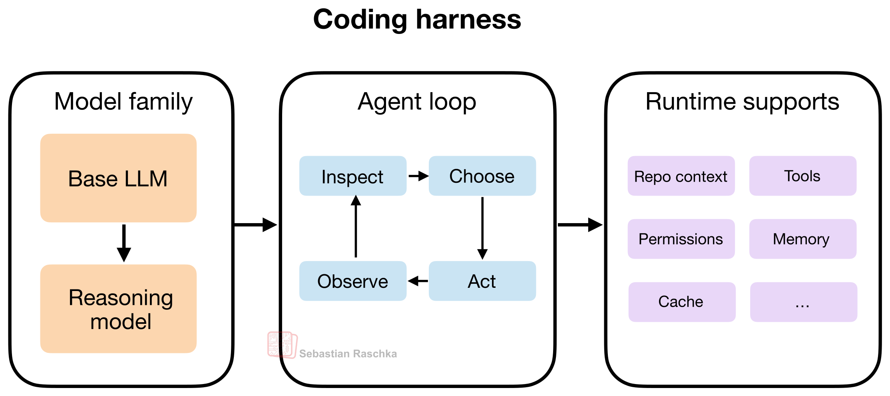
코딩 에이전트는 결국 “시스템”의 문제다
이 글을 읽으며 가장 크게 남는 메시지는 이겁니다.
코딩은 단순한 다음 토큰 예측 작업이 아니다.
실제 코딩 작업은 오히려 이런 것들의 조합에 가깝습니다.
- 저장소 구조 파악
- 관련 파일 찾기
- 심볼 검색
- 설정 파일 확인
- diff 적용
- 테스트 실행
- 에러 로그 해석
- 긴 세션 동안 맥락 유지
즉, 코딩 에이전트의 능력은 모델이 혼자서 만들어내는 것이 아니라, 모델 + 도구 + 메모리 + 컨텍스트 관리 + 실행 흐름이 함께 만드는 결과물에 가깝습니다.
그래서 Claude Code나 Codex가 일반 채팅창보다 훨씬 강력하게 느껴지는 것도 자연스럽습니다. 모델만 다른 것이 아니라, 주변 시스템이 훨씬 더 촘촘하게 설계되어 있기 때문입니다.
코딩 에이전트의 6가지 핵심 구성요소
Raschka는 코딩 에이전트를 이루는 핵심 구조를 6가지로 정리합니다. 이 6가지를 기준으로 보면, 대부분의 코딩 에이전트 도구를 꽤 선명하게 해석할 수 있습니다.
1. Live Repo Context
좋은 코딩 에이전트는 작업을 시작하기 전에 현재 저장소와 작업 환경을 먼저 이해합니다.
예를 들면 이런 것들입니다.
- 현재 Git 브랜치
- 변경 중인 파일
- 프로젝트 구조
- README, AGENTS.md 같은 지침 파일
- 테스트 실행 방법
- 루트 디렉터리 위치
이걸 미리 알아야 “테스트 고쳐줘”, “이 기능 추가해줘” 같은 요청이 실제 작업으로 연결됩니다. 결국 좋은 에이전트는 매번 0에서 시작하지 않고, 먼저 워크스페이스 요약을 만든다는 점이 중요합니다.
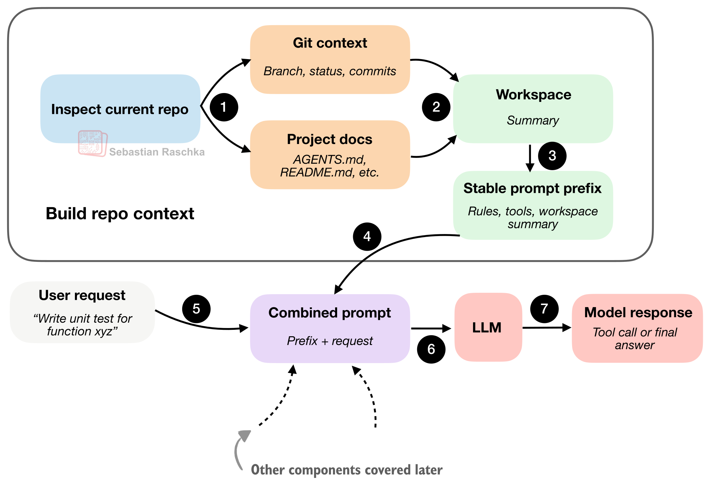
2. Prompt Shape and Cache Reuse
코딩 세션에서는 매번 바뀌지 않는 정보가 많습니다.
- 시스템 지시사항
- 도구 설명
- 워크스페이스 요약
- 에이전트 규칙
반면 자주 바뀌는 정보는 보통 이쪽입니다.
- 최신 사용자 요청
- 최근 대화 기록
- 단기 메모리
좋은 하네스는 이 차이를 이용합니다. 안정적인 프롬프트 접두사(stable prefix)는 재사용하고, 자주 바뀌는 부분만 갱신하는 것이죠. 이건 단순한 비용 절감이 아니라, 응답의 일관성과 품질에도 영향을 줍니다.
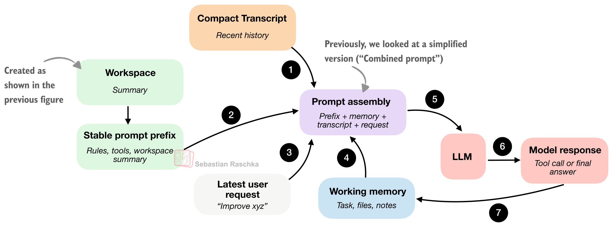
3. Structured Tools, Validation, and Permissions
여기서부터 채팅형 AI와 에이전트형 AI의 차이가 선명해집니다.
채팅형 모델은 명령을 추천할 수 있지만, 에이전트는 실제로 도구를 실행합니다. 그래서 하네스는 단순히 도구를 붙이는 것을 넘어, 도구 사용을 구조화해야 합니다.
좋은 하네스는 보통 다음을 관리합니다.
- 허용된 도구 목록
- 명확한 입력 형식
- 검증 가능한 인자 구조
- 사용자 승인 여부
- 경로 제한과 안전 장치
즉, 모델이 하고 싶은 행동을 아무렇게나 실행하는 것이 아니라, 하네스가 이해할 수 있는 형식으로 제안하고 검증한 뒤 실행하는 구조입니다.
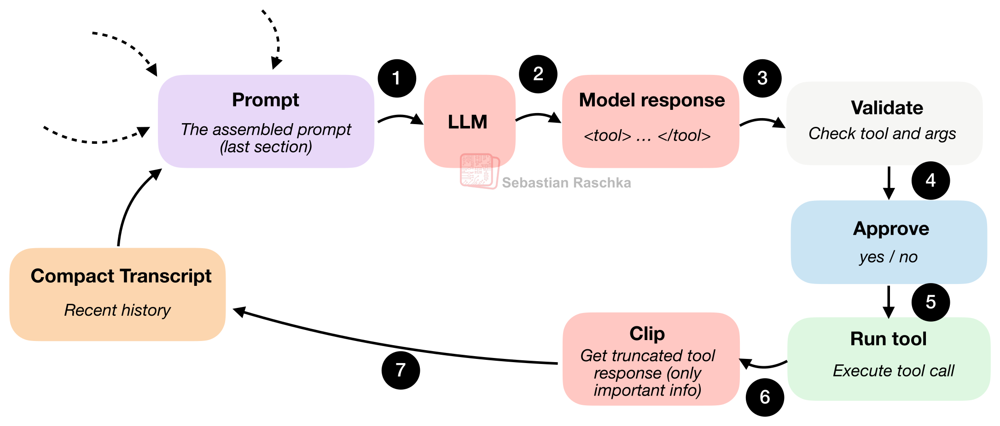
그리고 사용자가 실제로 보게 되는 승인 흐름은 이런 느낌입니다.
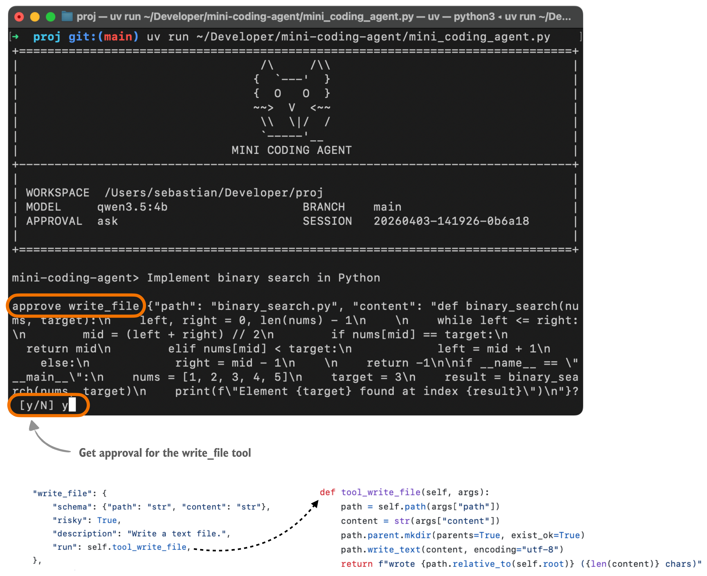
이 구조 덕분에 안전성과 신뢰성이 함께 올라갑니다.
4. Context Reduction and Output Management
이 부분은 꽤 지루해 보이지만, 사실 실전에서는 정말 중요합니다.
코딩 에이전트는 일반 채팅보다 컨텍스트가 훨씬 빨리 불어납니다.
- 파일 읽기 반복
- 긴 테스트 로그
- 명령 출력 누적
- 같은 파일의 반복 참조
이걸 그대로 쌓아두면 컨텍스트가 금방 오염되고, 중요한 정보보다 불필요한 로그가 더 큰 비중을 차지하게 됩니다.
그래서 좋은 하네스는 보통 아래 전략을 씁니다.
- 클리핑: 너무 긴 출력은 잘라냄
- 요약: 오래된 기록을 압축
- 중복 제거: 이미 본 파일 내용 반복 방지
- 최신성 우선: 최근 정보는 풍부하게, 오래된 정보는 더 과감하게 압축
원문에서 정말 좋았던 표현이 있습니다.
겉보기 모델 품질의 상당 부분은 사실 컨텍스트 품질이다.
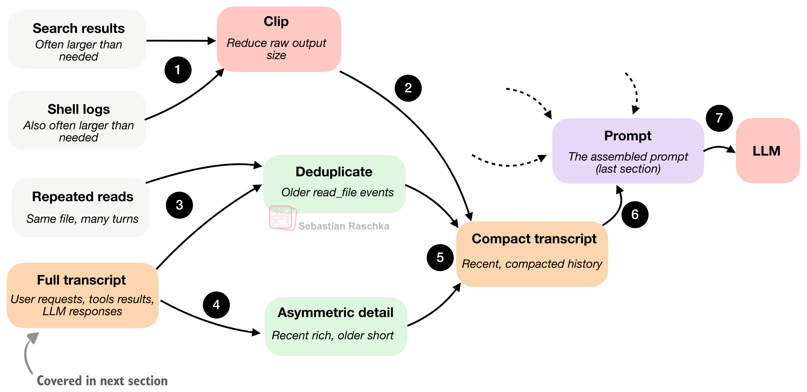
5. Transcripts, Memory, and Resumption
좋은 에이전트는 상태를 최소 두 층으로 나눕니다.
Full Transcript
- 전체 대화 기록
- 도구 출력
- 사용자 요청
- 모델 응답
- 세션 재개용 로그
Working Memory
- 현재 작업의 핵심 요약
- 중요한 파일
- 최근 메모
- 다음 행동에 필요한 압축 상태
이 둘은 비슷해 보여도 목적이 다릅니다.
- transcript는 전체 기록 보존
- working memory는 작업 연속성 유지
이 구분이 없으면 에이전트는 너무 많은 걸 다 기억하려 하다가 오히려 더 산만해집니다.
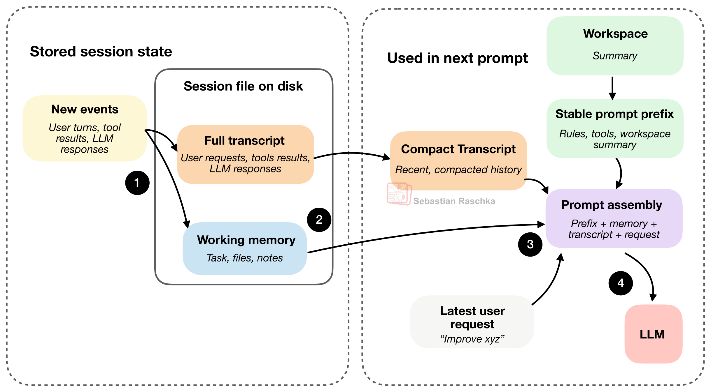
6. Delegation and Bounded Subagents
복잡한 작업은 하나의 루프가 전부 끌어안기보다, 일부를 서브에이전트에 위임하는 편이 더 효율적입니다.
예를 들면 이런 일들이죠.
- 특정 심볼이 어느 파일에 정의됐는지 찾기
- 설정 파일 조사하기
- 테스트 실패 원인 따로 확인하기
- 참고 자료나 레퍼런스 조사하기
다만 여기서 핵심은 “분리” 자체가 아니라 경계 설정입니다.
- 충분한 컨텍스트는 물려줘야 하고
- 대신 권한은 더 좁히고
- 재귀나 중복 작업은 제한해야 합니다
즉, 좋은 서브에이전트 설계는 쓸모 있을 만큼 자유롭고, 사고 안 날 만큼 제한된 상태를 만드는 일입니다.
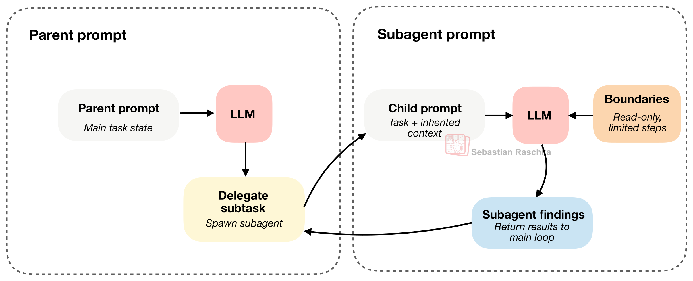
이 글이 실무자에게 주는 시사점
이 글은 단순히 구조 설명에서 끝나지 않습니다. 실제로 코딩 에이전트를 쓰거나 만들 때 무엇을 봐야 하는지도 분명하게 보여줍니다.
1. 모델만 비교하면 반쪽짜리 평가가 된다
“어느 모델이 더 잘하냐”보다, 그 모델이 어떤 하네스 위에 올라가 있느냐를 같이 봐야 합니다.
2. 도구 설계가 곧 성능 설계다
에이전트가 열어둔 도구의 형태와 검증 구조가 곧 사용자 경험을 만듭니다.
3. 메모리 구조는 선택이 아니라 필수다
긴 세션을 잘 이어가려면 transcript와 working memory를 분리하는 사고가 필요합니다.
4. 서브에이전트는 앞으로 더 중요해질 가능성이 크다
복잡한 작업을 병렬화하고, 본 작업의 집중도를 유지하는 데 큰 역할을 할 수 있습니다.
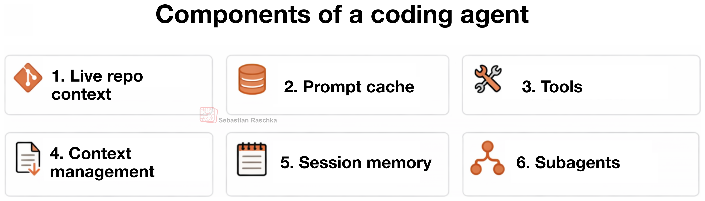
OpenClaw와 비교해 보면
원문에서도 OpenClaw를 비교 대상으로 잠깐 언급합니다. 이 비교도 꽤 흥미롭습니다.
- Claude Code / Codex는 저장소 작업에 최적화된 코딩 하네스에 가깝고
- OpenClaw는 코딩도 할 수 있지만, 더 넓은 범용 로컬 에이전트 플랫폼에 가깝습니다
공통점도 적지 않습니다.
- 워크스페이스 지침 파일 사용
- 세션 기록 저장
- 트랜스크립트 압축
- 서브에이전트/헬퍼 세션 활용
하지만 초점은 다릅니다. 코딩 하네스는 repo 중심, OpenClaw는 workspace와 채널 중심이라고 보는 쪽이 더 정확합니다.
마무리
Sebastian Raschka의 이 글은 “코딩 에이전트가 왜 강력한가”를 설명하는 글이면서도, 동시에 좋은 에이전트 제품이 어떻게 설계되는지를 이해하게 해주는 글입니다.
특히 아래 질문에 관심 있는 분에게 추천할 만합니다.
- 왜 Claude Code나 Codex는 일반 챗봇보다 더 강력하게 느껴질까?
- 코딩 에이전트는 정확히 어떤 구조로 돌아갈까?
- 하네스는 왜 중요한가?
- 컨텍스트 관리와 메모리 구조는 왜 성능과 직결될까?
한 문장으로 다시 정리하면 이렇습니다.
좋은 코딩 에이전트는 좋은 모델 위에, 좋은 하네스를 올린 결과물이다.
FAQ
Q1. 이 글의 핵심은 무엇인가요?
코딩 에이전트의 성능은 모델 자체보다, 모델을 감싸는 하네스 설계에 크게 좌우된다는 점입니다.
Q2. 하네스는 정확히 무엇인가요?
프롬프트, 도구, 권한, 상태, 메모리, 실행 흐름을 관리해 모델이 실제 작업을 잘 수행하게 만드는 소프트웨어 층입니다.
Q3. 왜 컨텍스트 관리가 중요한가요?
코딩 에이전트는 파일 읽기, 로그, 테스트 결과 등으로 컨텍스트가 매우 빠르게 커지기 때문에, 압축·중복 제거·최신성 우선 전략이 필수입니다.
Q4. 서브에이전트는 왜 중요한가요?
메인 작업과 별개인 사이드 태스크를 분리해 처리할 수 있기 때문입니다. 다만 충분한 컨텍스트와 제한된 권한의 균형이 중요합니다.
Q5. OpenClaw와 Claude Code는 같은 종류인가요?
겹치는 부분은 있지만 초점이 다릅니다. Claude Code는 코딩 하네스에 가깝고, OpenClaw는 코딩도 가능한 범용 로컬 에이전트 플랫폼에 더 가깝습니다.